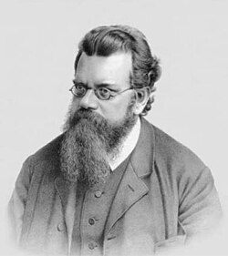

Blogs
Selected writing
Quantum Mechanics · History of Physics
Einstein And Entanglement
Einstein called it "spooky action at a distance" and spent decades trying to disprove it. The debate that changed quantum mechanics forever.
 →
→
Cosmology · Special Relativity
Limits Of The Universe
How far does the universe stretch? Exploring cosmic horizons, relativity, and the ultimate limits of what humanity can ever know.
 →
→
Thermodynamics · History of Science
Ludwig Boltzmann: The Genius of Disorder
The physicist who explained entropy, embraced randomness, and transformed our understanding of the universe.

→